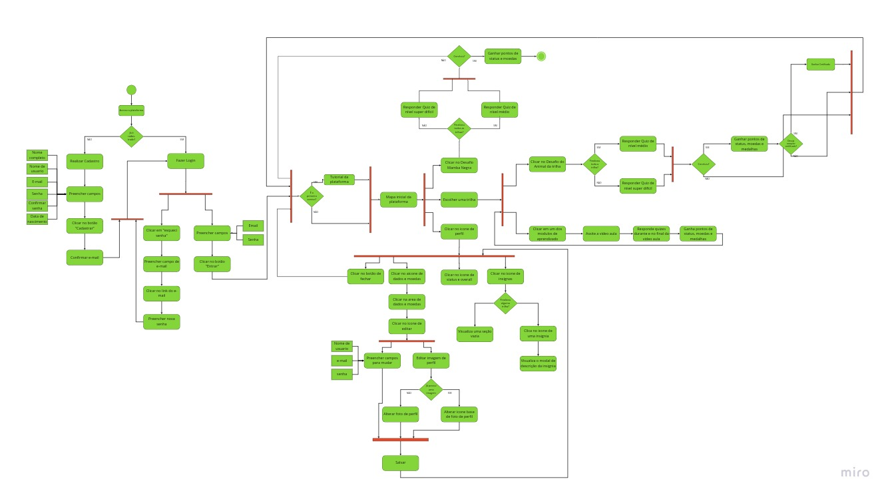
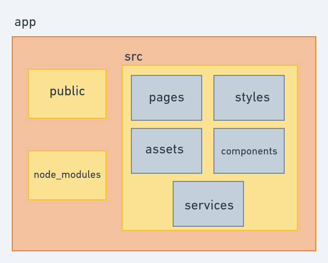
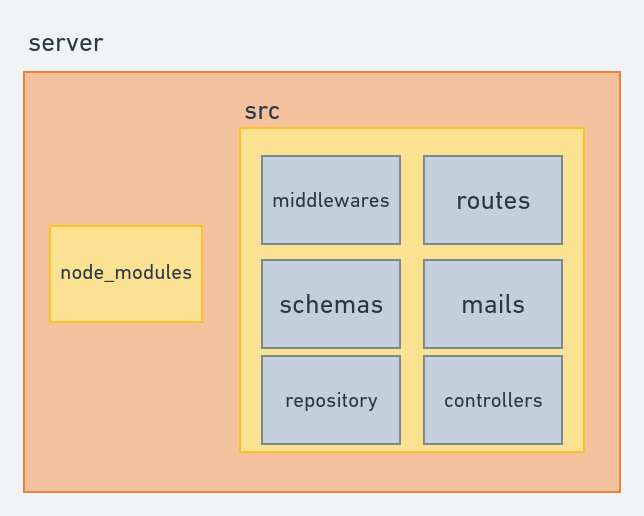
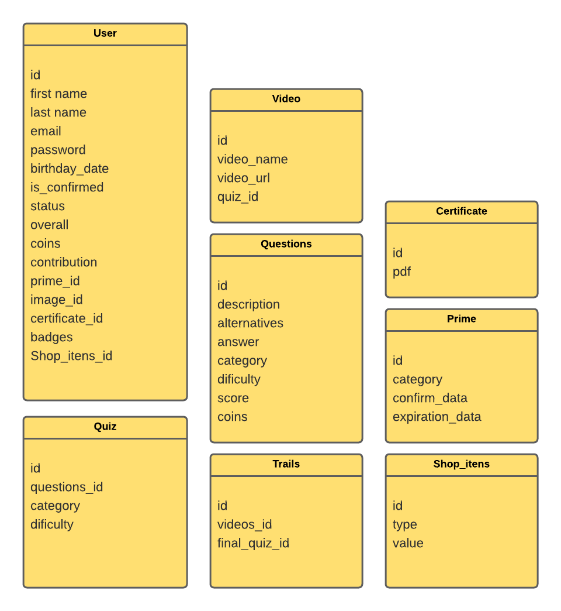

Documento de arquitetura
| Autor | Descrição | Data | Versão |
|---|---|---|---|
| Gabriel Sabanai | Tópicos 1 e 2 | 25/03/2021 | 0.1 |
| Gabriel Sabanai | Tópicos 3 e 4 | 26/03/2021 | 0.2 |
| Gabriel Sabanai e Natan Tavares | Tópico 5 | 27/06/2021 | 0.3 |
1 _ Introdução
1.1 Finalidade
Esse documento de arquitetura tem como função mostrar uma visão geral sobre a arquitetura utilizada pelo software do Hakuna Matata (nome em desenvolvimento), ela é uma descrição do sistema que auxilia na compreensão de como o sistema irá se comportar. Portanto, especifica decisões relevantes na produção e implementação do projeto Hakuna Matata em relação a como acontecerá a comunicação dos diversos serviços contidos no software como um todo.
1.2 Escopo
O Hakuna Matata (nome em desenvolvimento) é uma plataforma web gamificada que tem por objetivo ser um acesso gratuito e interativo a conteúdos do PMI, criados e disponibilizados por Gino Terentim.
Esse documento tem como objetivo representar as decisões arquiteturais do projeto, levando em conta as restrições impostas devido o contexto e visão da aplicação. Estão descritos neste documento especificações de tecnologia como linguagens, frameworks e padrões de projeto.
1.3 Referências
1.4 Definições, Acrônimos e Abreviações
- API - Application Programming Interface: uma série de procedimentos que permite a criação de aplicações que fazem uso de dados e funcionalidades de um outro sistema, aplicação ou serviço.
- REST - Representational State Transfer: Estilo de arquitetura de software que define um conjunto de restrições a serem usadas para a criação de APIs.
2 _ Representação da arquitetura

2.1 ReactJS
O React (também denominado React.js ou ReactJS) é uma biblioteca JavaScript de código aberto com foco em criar interfaces de usuário (frontend) em páginas web. Tem como princípio a componentização através do uso da linguagem conhecida com JSX.
2.2 NodeJS
Node.js é um software de código aberto, multiplataforma, que executa códigos JavaScript no backend/servidor e frontend/interface (dependendo apenas das bibliotecas e dos frameworks usados), baseado no V8 interpretador de JavaScript em C++ do Google, mantido pela fundação Node.js em parceria com a Linux Foundation.
2.3 MongoDB
Banco de dados NoSQL, baseado em documentos e escrito em C++. Faz uso de documentos similares ao JSON, o que permite alta performance porém mantendo a simplicidade.
3 _ Metas e restrições de arquitetura
São metas da arquitetura:
- Facilitação no desenvolvimento;
- Independência no desenvolvimento das equipes;
- Clareza no desenvolvimento dos serviços.
São restrições da arquitetura:
- A aplicação deverá ser uma plataforma web;
- Necessita ser executada nos navegadores Google Chrome, Mozilla Firefox, Safari e Opera.
4 _ Mapa de Histórias de Usuário
| ÉPICOS | USER STORY | DESCRIÇÃO | PRIORIDADE |
|---|---|---|---|
| Cadastro | US01 | Eu, como usuário, gostaria de me cadastrar na plataforma, para que eu tenha uma conta de acesso a mesma e às suas funcionalidades. | Must |
| Cadastro | US02 | Eu, como usuário, gostaria de confirmar a criação da minha conta por email para assegurar a criação da mesma. | Should |
| Login | US03 | Eu, como usuário, gostaria de realizar o Login na plataforma, para que eu possa acessa-lá de fato. | Must |
| Login | US04 | Eu, como usuário, gostaria de recuperar minha senha por email caso eu a tenha esquecido para que eu possa recuperar o acesso da conta. | Should |
| Perfil | US05 | Eu, como usuário, gostaria de ter acesso aos meus dados pessoais de perfil, para que eu possá visualiza-los. | Must |
| Perfil | US06 | Eu, como usuário, gostaria de editar os dados do meu perfil, para que eu possa modifica-los. | Could |
| Perfil | US07 | Eu, como usuário, gostaria de adicionar uma foto de perfil para que eu possa ter uma foto cadastradas aos meus dados. | Should |
| Perfil | US08 | Eu, como usuário, gostaria de visualizar meus pontos, minhas moedas e meu status para estar ciente da minha progessão na plataforma. | Must |
| Perfil | US09 | Eu, como usuário, gostaria de acessar, minhas insignias e certificados para visualizar as trilhas que eu concluí e as certificações que eu comprei. | Must |
| Perfil | US10 | Eu, como usuário, gostaria de acessar a descrição das minhas insignias para que eu possa estar ciente dos detalhes das mesmas. | Should |
| Perfil | US11 | Eu, como usuário, gostaria de acessar com detalhes os certificados que eu comprei, para visualizá-los e baixa-los. | Must |
| Mapa Inicial | US12 | Eu, como usuário, gostaria de acessar o mapa inicial para que eu possa começar a utilizar a aplicação e visualizar/interagir com a interface.. | Must |
| Mapa Inicial | US13 | Eu, como usuário, gostaria de ser introduzido a um tutorial no meu primeiro acesso para que eu possa entender como utilizar a aplicação. | Could |
| Trilhas | US14 | Eu, como usuário, gostaria de acessar as trilhas para vizualizar seus conteúdos. | Must |
| Trilhas | US15 | Eu, como usuário, gostaria de acessar e assistir os conteudos das trilhas para adquirir conhecimento do assunto de tal trilha. | Must |
| Trilhas | US16 | Eu, como usuário, gostaria de responder os quizes que aparecerem durante os videos de conteudo e após, para que possa fixar meu conhecimento. | Must |
| Desafios | US17 | Eu, como usuário, gostaria de realizar o desafio final para que eu possa testar meus conhecimentos gerais. | Must |
| Desafios | US18 | Eu, como usuário, gostaria de realizar o desafio final da trilha para que eu possa testar meus conhecimentos do módulo. | Should |
| Pontuação e Recompensa | US19 | Eu, como usuário, gostaria de ganhar pontos de status ao concluir tarefas para que eu possa receber um feedback do meu desenvolvimento | Should |
| Pontuação e Recompensa | US20 | Eu, como usuário, gostaria de ganhar moedas ao concluir tarefas para que eu possa adiquirir outros materiais de conhecimento. | Should |
| Pontuação e Recompensa | US21 | Eu, como usuário, gostaria de ganhar insígnias ao concluir os desafios das trilhas para registrar a minha progressão e evolução na plataforma | Should |
| Pontuação e Recompensa | US22 | Eu, como usuário, gostaria de poder comprar meus certificados após concluir os desafios, para que eu tenha registrado que eu tenho conhecimento daquele modulo. | Should |
| Pontuação e Recompensa | US23 | Eu, como usuário, gostaria de poder assinar a plataforma para obter os certificados das trilhas e ajudar a arrecar dinheiro para ONG's. | Should |
| Pontuação e Recompensa | US24 | Eu, como usuario, gostaria de ter acesso a uma loja para que eu possa comprar materiais extras com as moedas que eu fui adiquirindo. | Should |
| Progressão | US25 | Eu, como usuário, gostaria que a narrativa do mapa inicial interagisse comigo para que eu possar ter uma experiencia gamificada. | Must |
| Progressão | US26 | Eu, como usuário, gostaria que a narrativa das trilhas interagisse comigo para que eu possa ter uma experiencia gamificada. | Must |
5 _ Visão Lógica
A aplicação é baseada na arquitetura de cliente e servidor, ou seja, um computador central vai funcionar como servidor passando as requisições feitas pelos clientes a partir de máquinas que fazem parte da rede de acesso. Dessa forma, a aplicação terá um banco de dados central, o que evita problemas de redundância e contradição e oferece maior segurança por possuir menos pontos de entrada. Assim, é possível adicionar ou remover clientes sem pertubar o funcionamento da rede e suas funcionalidades essenciais.
5.1 Diagrama de pacotes
- Web
O Front End será construído por completo utilizando a biblioteca Javascript, React Js. No diagrama abaixo, é possível visualizar a estrutura básica de pacotes da aplicação Front.

- Back
A aplicação no Back End será feita em cima da tecnologia Node Js. O diagrama abaixo exemplifica a estrutura básica do nosso servidor. 
5.2 Diagrama de banco de dados
